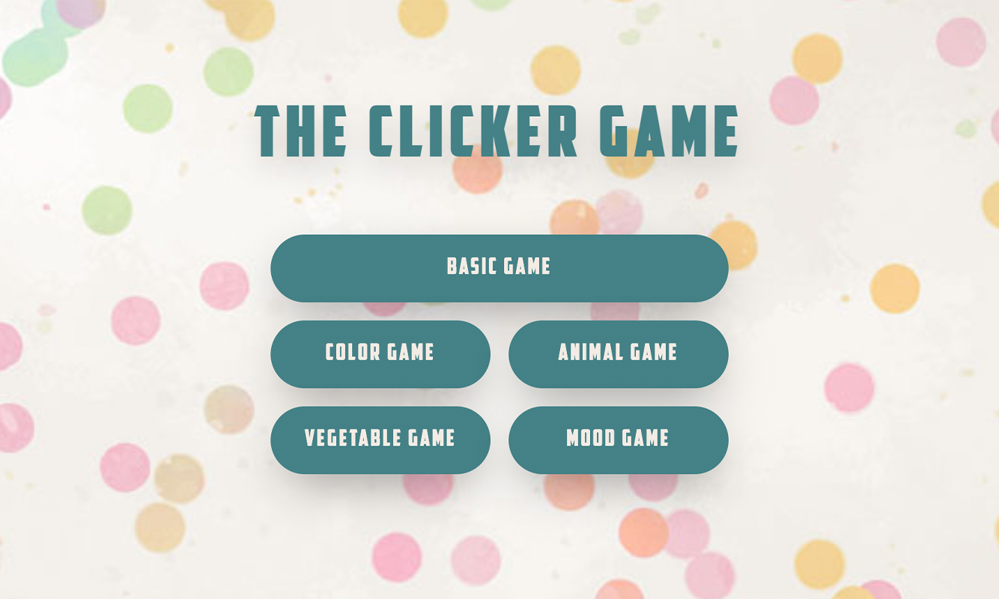
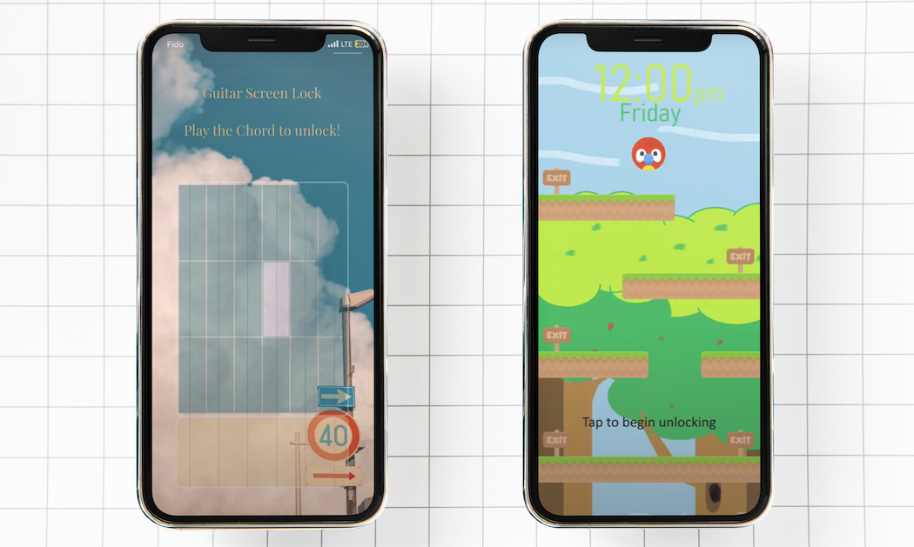
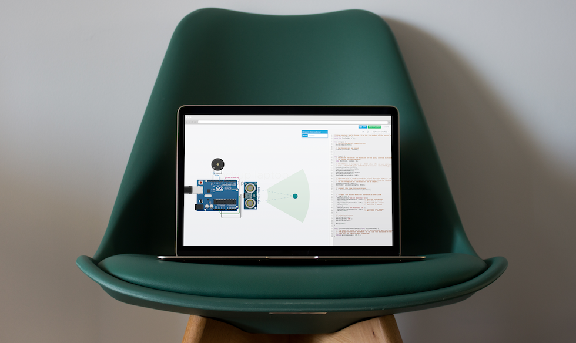

Human-Computer Interaction II
CPSC 581
An engaging and interactive application designed to improve hand-eye coordination and reflex responses, all while providing a fun and entertaining experience.
Clicker Game

An engaging and interactive application designed to improve hand-eye coordination and reflex responses, all while providing a fun and entertaining experience.
A unique multi-touch screen lock and sensory screen unlock design for mobile devices, with the primary goal being fun rather than strict security.
Screen Unlock

A unique multi-touch screen lock and sensory screen unlock design for mobile devices, with the primary goal being fun rather than strict security.
A posture corrector device attached on the chair, using the basic Arduino kit hardware and the software to detect the user’s posture and provide feedback.
Posture Corrector

A posture corrector device attached on the chair, using the basic Arduino kit hardware and the software to detect the user’s posture and provide feedback.
"Explore our simple, web-based drawing tool: a straightforward application combining HTML and JavaScript, designed for easy sketching and coloring right in your browser.
The Board
"Explore our simple, web-based drawing tool: a straightforward application combining HTML and JavaScript, designed for easy sketching and coloring right in your browser.